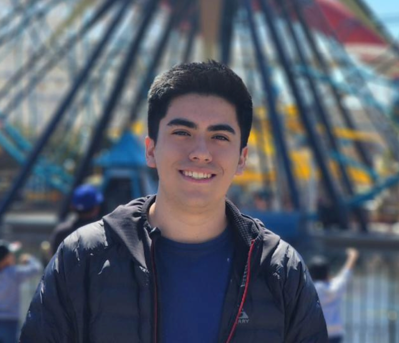
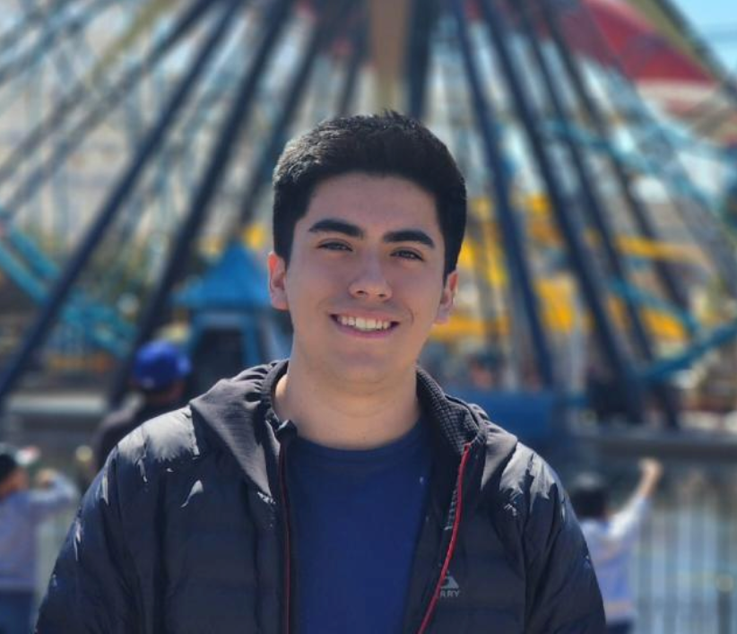

Portafolio de Actividades
Laboratorio de Redes Digitales
Departamento de Ciencias e Ingenierías | Universidad Iberoamericana Puebla, México.
 

- Resumen -
En esta primera práctica se realizo el encendido y apagado de un led (parpadeo del mismo) a traves de un microcontrolador llamado ESP32 empleando lenguaje de programación C++ en Arduino, utilizando IDE de Arduino para subir los programas al microcontrolador
Por otra parte, tambien se realizo el encendido y apagado del led mediante un push button, además de configurarlos como compuertas lógicas
- Introducción -
ESP32 es una familia de microcontroladores de la empresa Espressif Systems. Su analogía más clara es la de un ESP8266 con esteroides, que incluye Wifi, Bluetooth y otras potentes características extra.
ESP32 es una serie de SoC (por sus siglas en inglés, System on Chip) y módulos de bajo costo y bajo consumo de energía creado por Espressif Systems.
La familia incluye los chips:
- ESP32-D0WDQ6.
- ESP32-D0WD.
- ESP32-D2WD.
- ESP32-S0WD.
- Y el SiP (System in Package) ESP32-PICO-D4.
En esencia, estos se basan en un microprocesador Tensilica Xtensa LX6 (de uno o dos nucleos) con una frecuencia de operación de hasta 240 MHz.
Los ESP32 poseen un alto nivel de integración. En su pequeño encapsulado se incluyen:
- interruptores de antena
- balun de RF
- amplificador de potencia
- amplificador de recepción de bajo ruido
- filtros y módulos de administración de energía
Además de todo eso, logra un consumo de energía muy bajo a través de funciones de ahorro de energía que incluyen sincronización de reloj y múltiples modos de operación. Todo esto lo convierte en la herramienta ideal para tus proyectos energizados con baterías o aplicaciones IoT.
- Materiales -
Los materiales utilizados para esta práctica son los siguientes:
- ESP32
- Led
- 2 push button
- Resistencias (de 220 para los leds y 10k ohms para los botones).
- Desarrollo -
Se desarrollaron primero las simulaciones en WOKWI donde se hicieron las conexiones a manera digital junto con su programación para el encendido del led y los ejercicios de compuertas logicas, en este caso solo aplicamos AND y OR.
Después se implementó a fisíco con la materiales antes dichos, usando ESP32, un led, push buttons, resistencias y el programa de arduino.
Simulación
Las simulaciones son las siguientes:
Simulación Encendido
Simulación Apagado
Simulación Parpadeo
Simulación con un boton
Simulación de comuperta OR
Simulación de compuerta AND
Construcción
Los diagramas ya construidos, son los siguientes:
Para encendido y apagado
Para parpadeo
Para 1 botón
Para 2 botones y las compuertas
- Resultados -
Simulación Encendido
Simulación Apagado
Simulación Parpadeo
Simulación con un boton
Simulación de comuperta OR
Simulación de compuerta AND
- Conclusiones -
En esta práctica, se logró realizar la simulación de un circuito básico utilizando un ESP32 y un LED, comprobando el funcionamiento del microcontrolador al encender y apagar el LED en intervalos regulares. Se reforzaron conceptos clave como la configuración de pines de salida en el ESP32 y la implementación de retardos mediante la función ( delay).
Esta actividad permitió familiarizarse con el entorno de simulación de Wokwi, facilitando la prueba de código antes de implementarlo en hardware real. Además, se comprendió la importancia de estructurar correctamente el código en Arduino para lograr un control preciso de los dispositivos conectados.
En futuras prácticas, se explorarán interacciones más avanzadas con sensores y módulos de comunicación para ampliar las capacidades del ESP32 en proyectos más complejos.
- Referencias -
Carmenate, J. G. (2022, March 7). ESP32 Wifi + Bluetooth en un solo lugar. Programarfacil Arduino y Home Assistant. https://programarfacil.com/esp8266/esp32/
Espressif Systems. (2025). ESP32 Series Datasheet. Recuperado de https://www.espressif.com/en/products/socs/esp32
Arduino. (2025). Documentación oficial de Arduino para ESP32. Recuperado de https://www.arduino.cc/reference/en/
Wokwi. (2025). Plataforma de simulación en línea para microcontroladores. Recuperado de https://wokwi.com
Martínez, J. (2023). Introducción a la Programación de Microcontroladores ESP32 con Arduino IDE. Editorial Tecnológica.
IEEE Xplore. (2024). Applications of ESP32 in IoT-based Embedded Systems. Recuperado de https://ieeexplore.ieee.org/
- Descargables -
Descargar documento Word: documento.docx